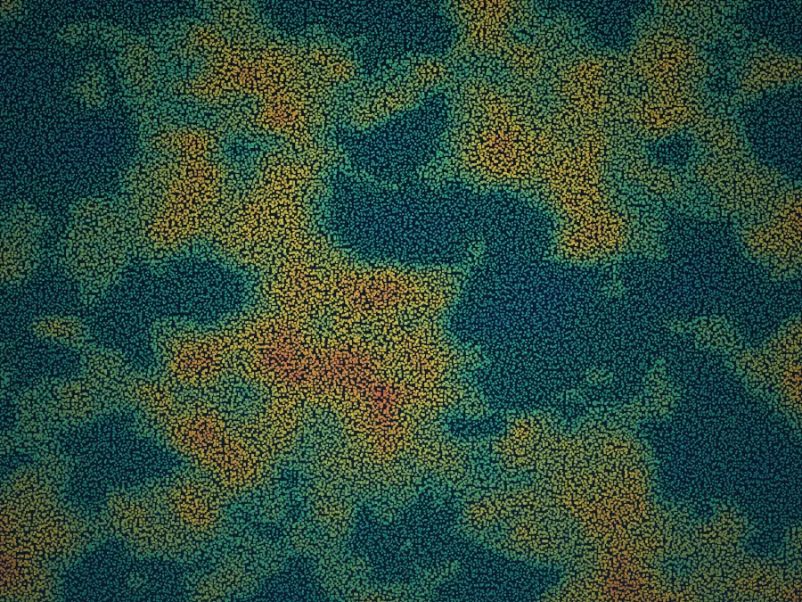

What the client was up against
After a series of record fire seasons, a state forestry agency needed to rebuild its wildfire fuel models on current data. That meant high-density canopy structure and bare-earth terrain across 1.2 million acres of steep, heavily vegetated backcountry — much of it hard to reach and frequently under smoke or haze.
Their previous approach, conventional linear-mode lidar flown low and slow, would have taken multiple seasons and several aircraft to cover the region, with repeated passes to fill shadowed canyons. The cost and timeline simply didn't fit a single pre-season planning window — and stale data meant fire behavior models built on the landscape of years past.

How 3DEO solved it
3DEO scoped the collection with the agency's fire-modeling team, then flew Sequoia at over 30,000 feet — capturing high-density single-photon lidar across the entire region in a fraction of the flight hours a linear system would require. Geiger-mode sensitivity meant strong returns through canopy gaps and thin haze, where a conventional sensor would have needed to drop altitude and refly.
Agile, geo-referenced scanning let the crew concentrate point density on the steepest, most shadow-prone canyons in a single pass, minimizing the data gaps that normally force re-collection. Acadia then processed the raw returns into validated, classified point clouds and bare-earth models — delivered in the formats the agency's fire-behavior software ingests directly.

What it delivered
3DEO delivered validated point clouds at 100+ points per square meter and ~8 cm vertical accuracy across the full 1.2 million acres in a single flight season — roughly 4× faster than the agency's prior workflow and at about a quarter of the cost per square mile, with no re-collection flights required.
With current, uniform-quality data in hand, the agency rebuilt its fuel and fire-behavior models ahead of the season, prioritized fuel-reduction treatments by modeled risk, and gave incident commanders accurate terrain for planning — outcomes that simply weren't reachable on the old multi-season timeline.
“We got uniform, high-density coverage of terrain we'd never been able to map well — an entire season's survey, delivered before our planning window instead of after it. The fuel models we built on it are the most current we've ever had going into fire season.”
The takeaway for teams like yours
If you need current, high-resolution forest structure across a large or hard-to-reach landscape — and the timeline or budget for conventional lidar doesn't work — 3DEO's high-altitude, single-photon approach can cover more ground, faster, with the density fire and resource models demand.